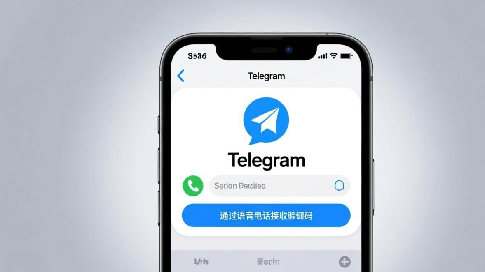
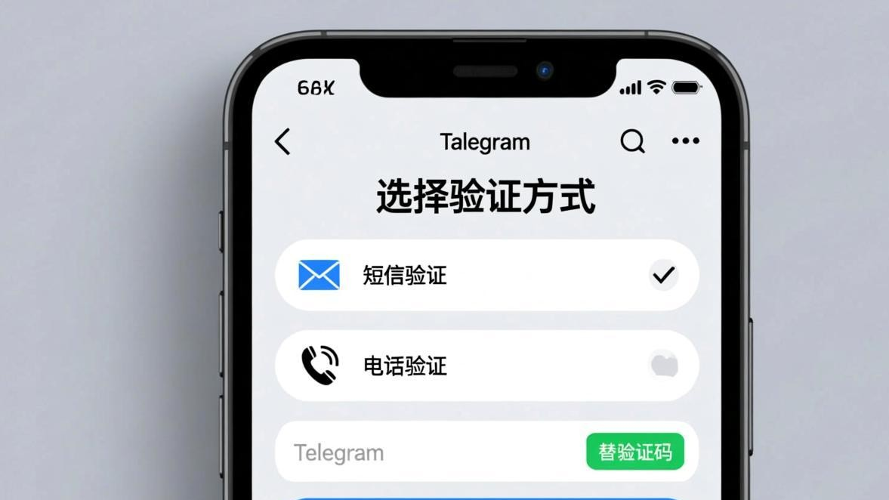

Telegram收不到短信验证码，客户端自查解决办法
手机号输完点击"下一步"，然后盯着屏幕等验证码……一分钟、两分钟、五分钟过去了，短信就是不来。这种情况在中国大陆用户中特别常见，原因多种多样，但大部分都可以在手机上自己解决，不需要求别人。

验证码收不到的五大原因
- 运营商拦截海外短信——部分运营商（尤其是一些虚拟运营商号段）默认关闭国际短信接收功能，Telegram发的验证码根本到不了你的手机
- 手机拦截软件误杀——系统自带或第三方安全App（如360手机卫士、腾讯手机管家）会把海外验证码短信识别为垃圾短信自动拦截
- 手机号格式错误——区号选错（比如没选+86）或号码中间有空格、横杠等特殊字符
- 短信延迟发送——Telegram的短信服务器偶尔会有延迟，尤其是高峰期
- 请求太频繁被限流——短时间内多次点击"重新发送"，触发了Telegram的反滥用机制
五步解决验证码收不到
第1步：确认手机号格式正确
中国大陆手机号正确格式：+86 + 11位手机号，中间不要有任何空格或符号。例如 +8613800138000。有些输入法会在数字间自动插入空格，输入完成后一定要再检查一遍输入框里的内容。另外确认区号选的是中国（+86），不要选成其他国家。
第2步：检查短信拦截设置
安卓手机：打开短信App → 设置 → 骚扰拦截 → 查看拦截记录。如果里面有Telegram的短信，把它移出拦截并加入白名单。
华为/小米/OPPO手机：这些品牌的系统自带"智能拦截"功能，经常把海外验证码误判为垃圾短信。去设置 → 短信 → 拦截规则，把拦截级别调到最低或者暂时关闭。
安全软件：如果装了360手机卫士、腾讯手机管家等App，这些软件也有短信拦截功能。暂时退出或关闭它们的拦截功能再试。
第3步：使用语音验证码（最推荐）
在输入手机号后等待约2分钟，登录页面底部会出现"通过语音电话接收代码"的选项。点击它，Telegram会直接打电话到你的手机上，用语音播报5位验证码。这是最可靠的替代方案，因为电话被运营商拦截的概率远低于短信。
注意事项：语音验证码的电话号码可能是海外号码，如果你的手机有来电拦截功能，注意接听陌生号码。

第4步：在其他已登录设备上接收
如果你之前已经在电脑、iPad或其他手机上登录过Telegram，新设备登录时的验证码会直接发送到这些已登录设备的Telegram客户端上，完全不需要短信。登录页面会提示"我们已经向您的其他设备发送了验证码"，去那台设备上查看就行。
第5步：联系运营商开通国际短信
如果你确认手机没有任何海外短信记录、也没有被拦截软件过滤，那很可能是运营商那边的问题。直接拨打运营商客服电话（10086/10010/10000），跟客服说要开通"国际短信接收功能"。部分运营商对新办号码默认关闭了这个功能。
注意事项
- 不要反复点击"重新发送验证码"，每次点击都会重置等待计时器
- 语音验证码的电话号码很可能被标记为"骚扰电话"或"海外电话"，注意不要拒接
- 短信验证码有效期只有5分钟，收到后尽快输入
- 如果以上五步全部试过还是收不到，换个手机号注册是最快的解决方案
常见问题
Q：短信等多久算不正常？
正常情况下1到3分钟。超过5分钟基本不用等了，直接改用语音验证码。
Q：语音验证码也没接到怎么办？
检查手机的来电拦截设置，确认没有被静音或挂断。如果确实接不到，可能是号码归属问题，尝试用家人的不同运营商号码注册。
Q：之前能收到，突然收不到了？
可能是短时间内请求次数太多被临时限制，等24小时后再试。也可能是运营商更新了拦截策略，联系运营商客服确认一下。